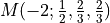
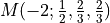
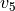
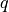

Example 5.1.2
This notebook demonstrates the results of subsection 5.1.2 of [1]. Here, we will compute the  invariant of the Seifert manifold , we will calculate the associated Weil representation and we will verify that through Wilson line insertion we can complete the representation.
invariant of the Seifert manifold , we will calculate the associated Weil representation and we will verify that through Wilson line insertion we can complete the representation.
Defect invariants
Here we compute the invariants with and without defects of the manifold. We do so using pyPlumbing. To that end, we import the Plumbing class and define a Plumbing as a Seifert manifold.
[1]:
from pyPlumbing import Plumbing
P = Plumbing.from_Seifert_data([-2,1/2,2/3,2/3])
P.display()
PyPlumbing provides functionality to compute the invariant. With trivial boundary conditions and Wilson line insersions in the heighest weight representations (0), (1) on the node  we obtain:
[2]:
group_rank = ["A",1]
b0,b1 = P.spin_c(group_rank)
print("b = %s" % b0.T)
for w in range(2):
W = [vector([0])]*5 + [vector([w])]
print(" w = %s" % W)
zh = P.zhat(group_rank, b0, 20, wilson=W)
print(" zh = %s" % zh)
print("b = %s" % b1.T)
for w in range(2):
W = [vector([0])]*5 + [vector([w])]
print(" w = %s" % W)
zh = P.zhat(group_rank, b1, 20, wilson=W)
print(" zh = %s" % zh)
b = [ 1 -1 0 -1 0 -1]
w = [(0), (0), (0), (0), (0), (0)]
zh = q^(-1)(4 - 4q^(1) + 4q^(2) + 4q^(5) - 4q^(7) - 4q^(12) + 4q^(15) + 4q^(22) - 4q^(26) - 4q^(35) + O(q^40))
w = [(0), (0), (0), (0), (0), (1)]
zh = q^(5667/2000)(4 - 4q^(6) + 4q^(15) - 4q^(27) + O(q^28))
b = [ 3 -1 -2 -1 0 -3]
w = [(0), (0), (0), (0), (0), (0)]
zh = q^(-1333/2000)(-4 + 4q^(3) - 4q^(9) + 4q^(18) + O(q^19))
w = [(0), (0), (0), (0), (0), (1)]
zh = q^(5667/2000)(4 - 4q^(6) + 4q^(15) - 4q^(27) + O(q^28))
Weil Representation
We wish to compare the -power expansions with the -series expansions of the linear combinations of false theta functions associated to the Weil representation. To that end we import the functions of 3d_modularity_revisited.sage which provide the necessary functionality.
[3]:
m = 2*3
K = [1,3]
[4]:
import numpy as np
load("3d_modularity_revisited.sage")
proj = weil_projector(m,K)
ind = [np.arange(2*m)[p != 0] for p in proj if len(np.arange(2*m)[p != 0]>0)]
signs = [np.sign((p)[ p != 0]) for p in proj if len(np.arange(2*m)[p != 0]>0)]
reps = list()
rep_sgns = list()
for rep,sgn in zip(ind,signs):
if not list(rep) in reps:
reps += [list(rep)]
rep_sgns += [list(sgn)]
th = function('theta', nargs=2)
for rep,rep_sgn in zip(reps,rep_sgns):
print("index = %s" % rep[0])
print("theta_{"+str(rep[0])+"}^{m+K} = %s" % sum(int(s)*th(m,r) for r,s in zip(rep,rep_sgn)))
theta_expansion = 0
for r,s in zip(rep,rep_sgn):
theta_expansion += s*false_theta(m,int(r),20)
print("theta_{"+str(rep[0])+"}^{m+K} = %s" % format_expansion(theta_expansion))
index = 1
theta_{1}^{m+K} = -theta(6, 11) - theta(6, 7) + theta(6, 5) + theta(6, 1)
theta_{1}^{m+K} = 2*q^(1/24)*(1.0 + 1*q + (-1.0)*q^2 + (-1.0)*q^5 + 1*q^7 + 1*q^12 + (-1.0)*q^15 + Order(q^20))
index = 3
theta_{3}^{m+K} = -theta(6, 9) + theta(6, 3)
theta_{3}^{m+K} = 2*q^(3/8)*(1.0 + (-1.0)*q^3 + 1*q^9 + (-1.0)*q^18 + Order(q^20))
Conclusion
Comparing the results, we can see that we have covered the whole Weil representation with defect invariants. Therefore we have demonstrated the Modularity Conjecture, Conjecture 4 of [1].
Bibliography
[1] Cheng Et al, 3D Modularity Revisited, ArXiv 2403.14920